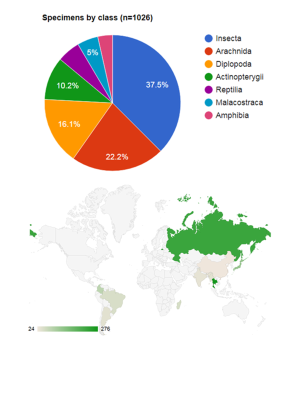

Training for building and reusing your corpus of mineable taxonomic literature

Visualization of data liberated from 22 published articles in the journals Zootaxa and PLoS ONE during the training course at Leiden University’s Integrative Taxonomy course.
The taxonomic literature is a rich, high quality, and largely untapped source of biodiversity knowledge. Taxonomy helps us recognize species and map their distributions through text descriptions, images, and records of when and where they have been observed. These are the data we need to answer questions that are relevant to our world today, like setting conservation priorities and anticipating the effects of climate change on biodiversity and ecosystem functions that affect the lives of people.
But the true value of taxonomic data remains unrealized because basic biodiversity information remains fragmented and unevenly accessible. In many cases, taxonomic literature contains everything that is known about a species. Semantic enhancement of taxonomic literature provides a solution by mobilizing data elements within taxonomic articles. Standard tags label the content of various elements, including taxonomic names, descriptions, images, and specimen records, and allow them to be shared among online databases.
In December 2018, Leiden University’s Integrative Taxonomy course organized by Jeremy Miller featured a unit on semantic enhancement of taxonomic literature. Over the course of the three-day unit, nine students learned about cybertaxonomy through lectures and assigned readings, and used the GoldenGATE document editor to apply semantic tags to 22 taxonomic articles published in the journals Zootaxa and PLoS ONE. Subjects included vertebrates (fish, reptiles, and amphibians) and arthropods (insects, arachnids, millipedes, and crustaceans). In some cases, students checked and corrected semantic tags previously applied using an automated process; in others, students applied tags de novo. A total of 1026 specimen records from 85 species (including 54 new species) were marked, which means they are now freely available through Plazi’s TreatmentBank and are shared with the Global Biodiversity Information Facility. The majority of records came from Thailand, Russia, or Japan.
The biodiversity knowledge library is vast, with an estimated half a billion printed pages describing more than a million species and citing many millions of specimens. Semantic enhancement of taxonomic literature gives us a way to query biodiversity knowledge, making the data freely available for aggregation, exchange, and reuse. But because biodiversity is one of the most information-rich fields of human knowledge, we need more people to commit their time and expertise to marking up taxonomic literature. The experience of training a classroom of students to mobilize taxonomic data by using GoldenGATE is proof of concept that our curriculum is ready to share with more students.